前段时间我对国内的部分Agent产品做了一个初步的横向测评
最后发现，WorkBuddy在国内横向产品中太能打了
易观分析的一份报告也证明这不是我的一家之言，用户用脚投票，workbuddy的日活已经把第二名远远甩开在了身后。
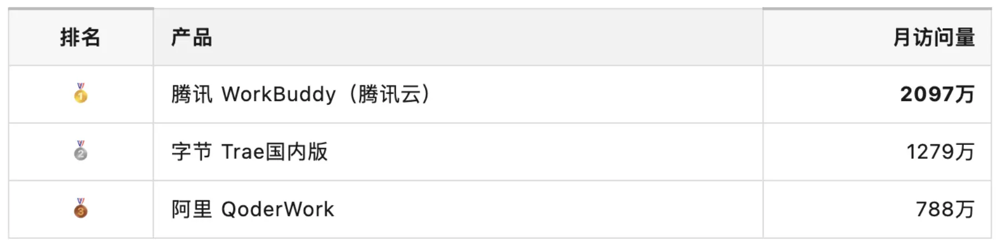
一方面WorkBuddy的生态太强了，这是腾讯系产品发展至今的先天优势，我相信没有人不用微信，不用微信你也看不到这篇文章。
另一方面就是WokrBuddy作为Agent产品本身就很出色，内置模型多，有国内最强的模型K3也有性价比极高的模型ds，还有限时免费的自家模型Hy3，还有大量其他模型。同时配套设施极其完善，可以说到了应有尽有的程度。
因此，我决定为可能会用到WorkBuddy的朋友们，写上一篇最新的入门保姆级教程。
相信我，即使你是小白，看完你也能快速上手。
我会从下载安装开始介绍，到各个功能模块的详解，开始实战前带大家改一下个性化设置，最后用两个案例带你全方位了解该如何使用WorkBuddy
下载安装
任意浏览器检索「workbuddy」
点击进入官网，就是以下页面
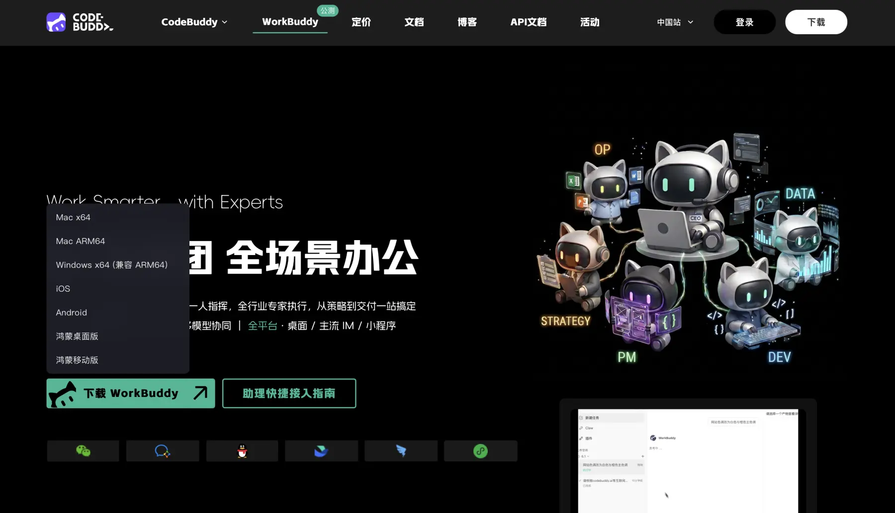
Mac、Windows、鸿蒙系统全都支持，根据你的电脑系统选择相应的版本就行。
我的电脑系统是Mac，所以选择下载Mac版本进行演示，安装完成后打开是这样一个页面。
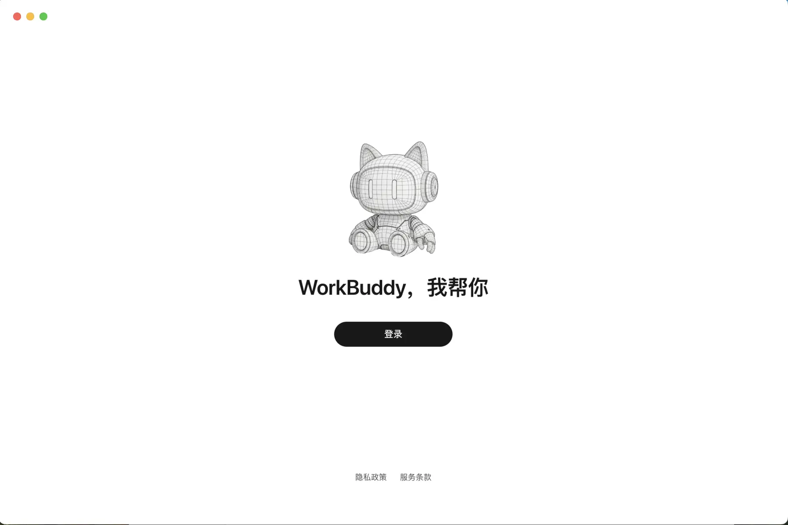
点击登陆
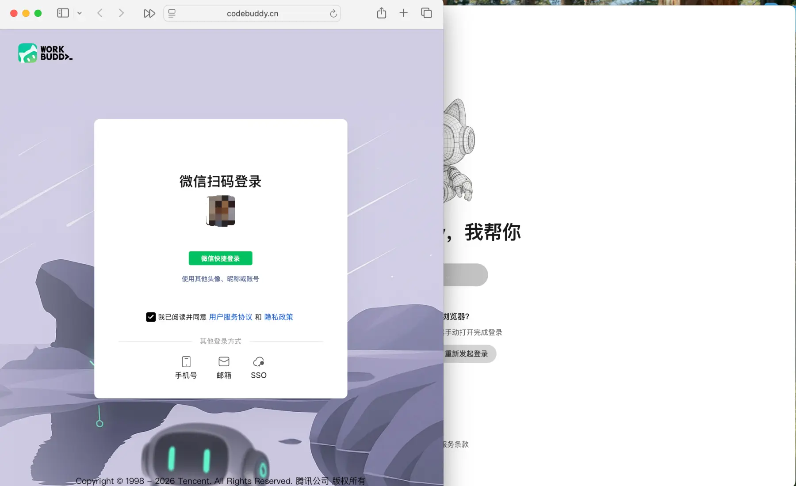
会出现一个微信扫码登录的页面
如果你的电脑上已经登陆了微信，那就直接点击快捷登录就行，这个对我来说是真的很方便。
认识主界面
下面这张图就是登陆后的页面，有主界面也有侧边栏，不用担心，今天全部为你介绍一遍。
先来看看中间这一大块主界面有哪些功能。
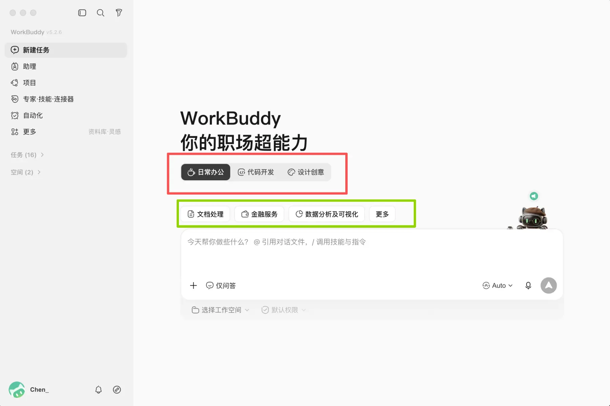
红色圈出来的是你能够选择的三种主要模式，分别是：日常办公，代码开发，设计创意。
这三种模式基本上覆盖了使用中的大多数场景，绿色部分与三种模式关联，会随着你选择的模式不同有差别。
选择日常办公，就是文档处理、金融服务、数据分析等等。选择代码开发，就是网站开发、Agent应用等等
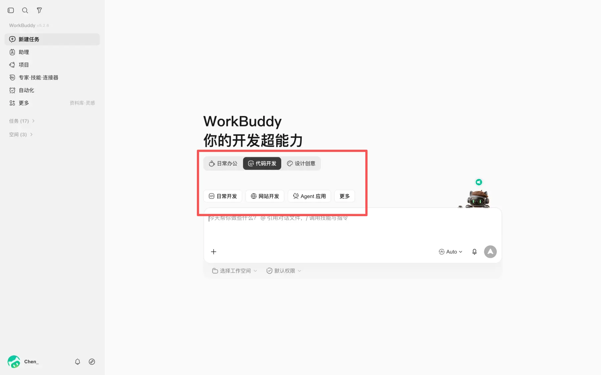
选择设计创意，就是网站设计、PPT设计和视觉海报等等
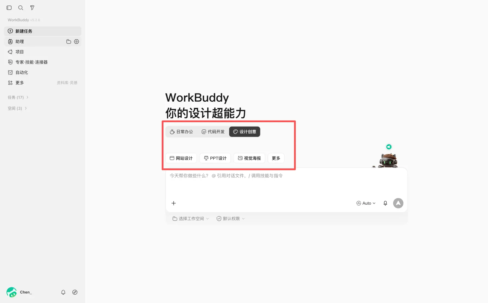
选择某种技能，比如选择了日常办公下的文档处理，还会出现各种更加详细的技能供你选择，这里就有财报分析、文档格式转化、竞品分析等等。
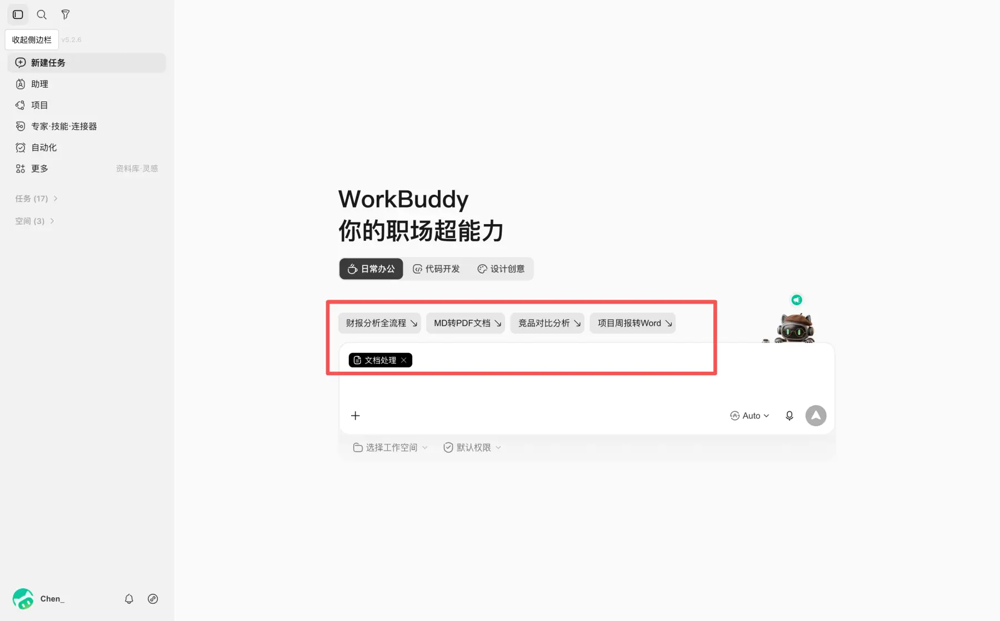
任意选择一个，比如说财报分析全流程，。就会出来一段财报分析全流程的提示词模版
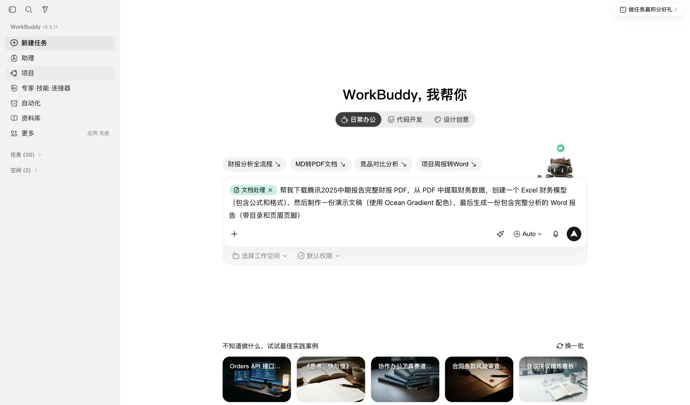
提示词是什么呢，我们日常所说的提示词其实就是对话框中你向AI输入的那些语句，提示词越具体越明了，AI最终产出的效果就会越如意。
而WorkBuddy为了防止大家刚开始使用不太会写提示词，直接给了相应场景下的提示词模板，只需要根据自己的实际需要进行改动就行。
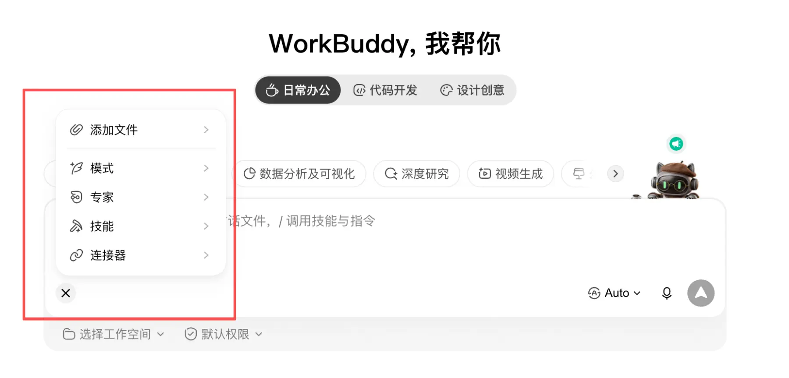
点击左下角的➕，会出现图中这些选项，点击添加文件。
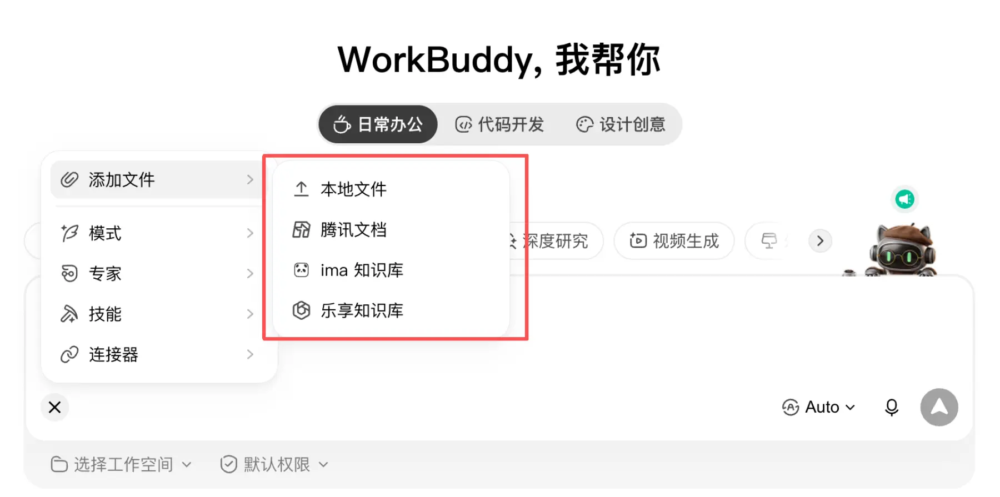
可以选择添加本地文件、腾讯文档、ima知识库、乐享知识库。
本地文件就是你在使用workbuddy的设备上存放的文件，腾讯文档就是腾讯自家的在线文档，其余两个暂时放在一边，日常使用场景不多，属于进阶使用。
将文件上传后，你可以指挥workbuddy给你修改文件，转化文件格式等等。
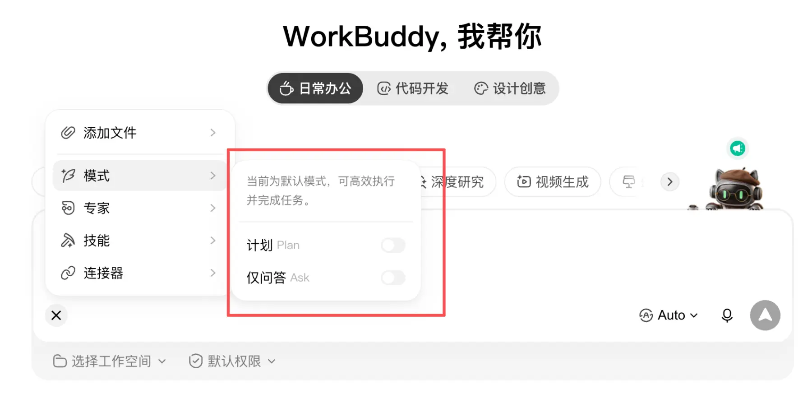
添加文件下面是选择模式，可以看到有两个模式可以选择
其实原本是三个，只是craft模式现在变成默认模式了
craft模式也就是默认模式下，当你给workbuddy发送指令后，workbuddy就会按照你的需求直接开始干活，也就是Agent模式，这会是使用场景最多的模式，所以直接被设为默认了
FBI warning，当workbuddy开始干活的时候，你的积分就在被消耗了
Plan模式下，当你提出需求后，workbuddy不会直接干活，而是和你讨论如何实现这个需求，先规划好
如果你在开始一个任务前，自己也不是很清楚自己的需求，我建议你先用Plan模式，防止Agent做任务的时候偏离了你的目标
Ask模式其实就是和AI聊天了，你问它答，不会动手操作，和用手机端豆包一样
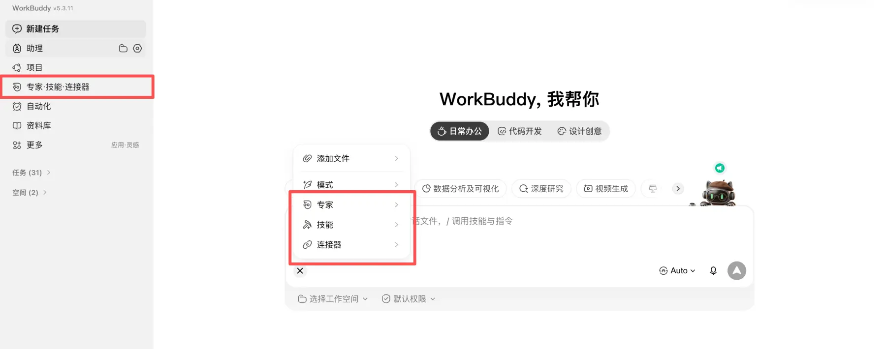
接下来的专家、技能以及连接器有两个入口，除了在左下角➕处可以选择，也可以在左边侧栏中点击进入
这个后面单独展开细说
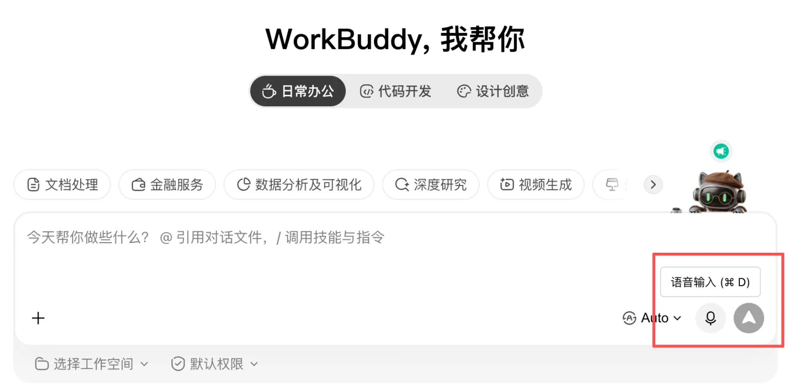
Auto边上的两个键，一个是语音输入，打开之后你对着电脑说话，对话框中就会出现对应的文字
另外一个就是发送了，点击就可以将你的提示词发送给大模型
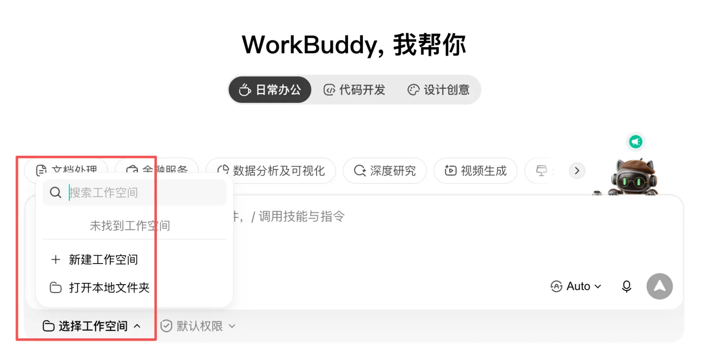
左下角的工作空间可以理解为项目文件夹，你可以新建一个工作空间完成一个项目，也可以选择本地已有的文件夹进行，如果你都不选，项目就会在默认路径输出。
一个项目放在一个工作空间中处理会更加便捷
如果你需要对自己的项目进行一个细致的管理，我也建议你还各个项目的工作空间隔开，不然产出都在默认路径输出，会混在一起，最后可能找不到自己需要的那个文件
权限设置
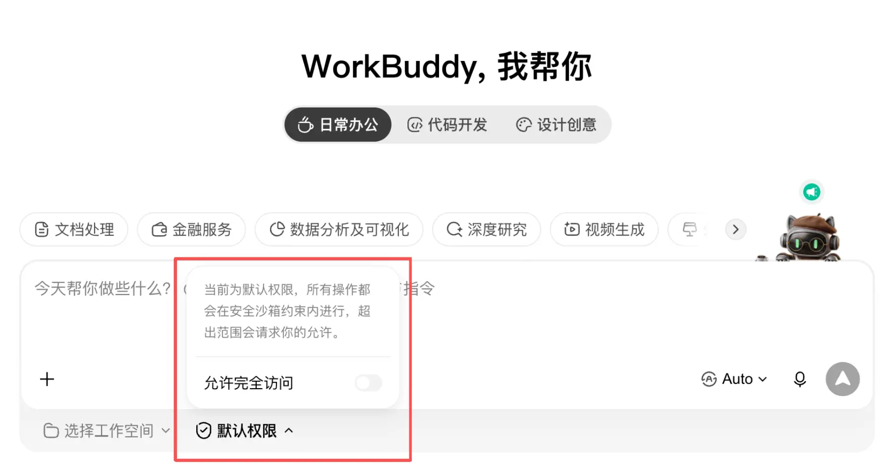
旁边点开可以设置权限，默认权限下更加安全，有风险的操作workbuddy会在询问过你，且你同意之后再进行
允许完全访问就是放开电脑上基本所有的用户权限给workbuddy，这样它可以利用一切工具来完成你的任务，也不需要中途一直请求你的许可。
这两种权限都有利有弊，默认权限下相对更安全，但是得有人看着，给它权限，不然workbuddy的工作可能会因为无权限进行下一步而中断。允许完全访问的话就可以交代清楚任务就不管了，但是可能会有未知风险
刚开始使用我建议大家还是选择默认权限，后面再根据自己的需求进行必要的改动。
模型选择
右下角红框内是选择模型的地方
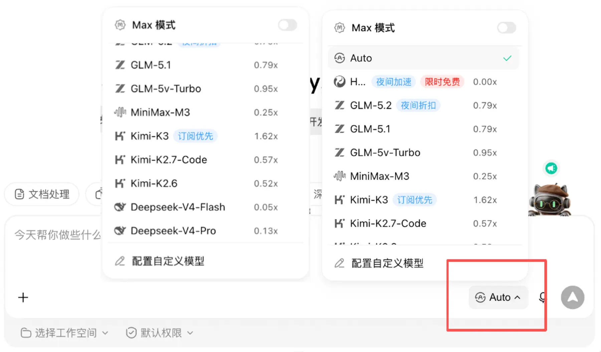
点击Auto，就进入了模型选择页面。
workbuddy原生接入了大量的国产模型，如果你不知道该如何选择，你可以选择Auto不变，这也是默认选项。Auto模式中，进行任务时workbuddy会自动根据任务难度分配合适的模型。
简单说一下，日常工作中我会怎么选择这些模型。
一些简单的任务比如说做做研报、简单的编程，我会选择Hy3，这是腾讯自研的大模型，一直到八月底都限时免费。稍微复杂一点的我会选择DeepSeek，性价比之选。如果是一些比较复杂的任务，我会选择GLM5.2，这属于国内大模型中上一代的顶级王者。如果有GLM5.2也无法妥善处理的任务，我会选择Kimi的K3，这是目前国内综合最强的大模型。
大家也可以在自己的使用过程中，根据自己的偏好选择喜欢的大模型处理任务。
如果觉得这些大模型不足以满足自己的需要，也可以点击「配置自定义模型」，会出现以下页面
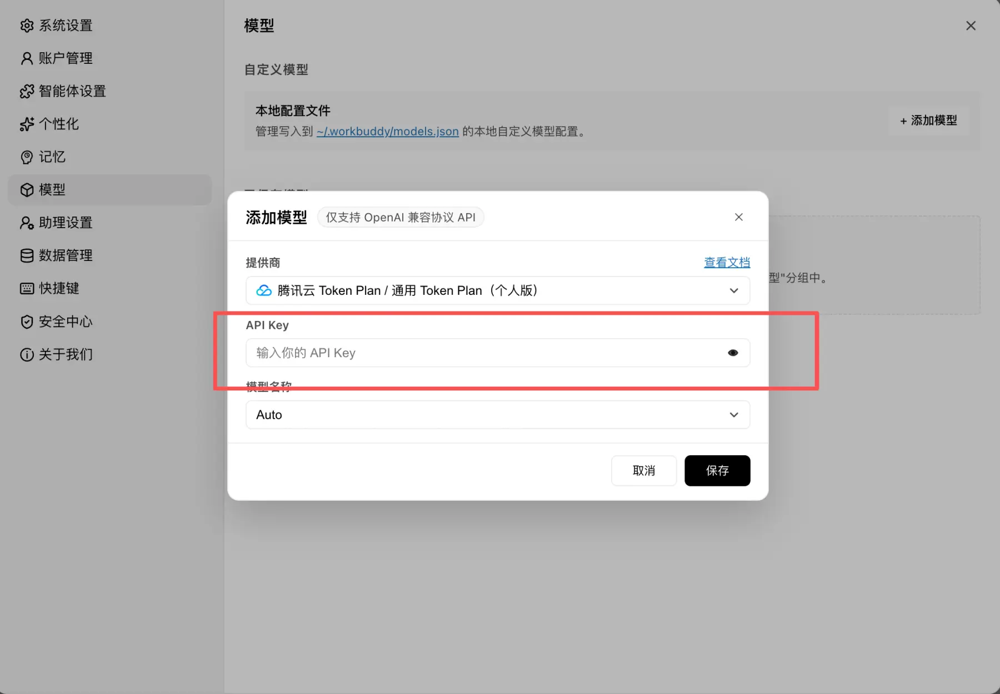
在API Key处填写从别的大模型开放平台处导出的Key就可以了
大家注意，这个Key一般只会出现一次，也就是你刚创建出来的时候，之后就看不见了
所以要赶紧复制下来，可以保存到自己信任的文档中，也可以直接导入workbuddy中
千万不要将这个Key泄漏出去，任何人复制了这个Key都可以花你用自己钱买的token了。
侧边栏介绍
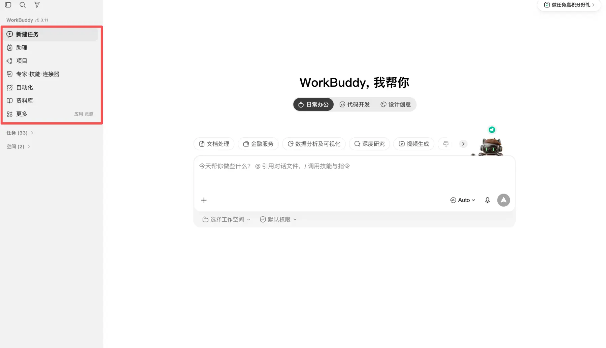
首先是「新建任务」，点击这个就会新建一个任务，即使你在别的对话窗口，也会跳到新页面，重新开始一段对话。
然后是「助理」，这个我觉得很实用，也很好玩。
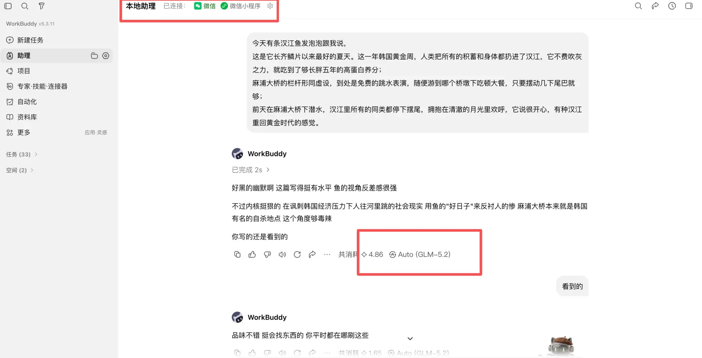
点击助理，会出现一个二维码，扫码绑定自己的手机之后，你就可以通过微信小程序在手机上控制workbuddy工作，也可以直接在微信对话框中与workbuddy进行对话。
注意，这必须保证你登陆着workbuddy的电脑是开机状态，对话和工作也会正常消耗你的积分
在介绍「项目」之前，我先介绍它下方的这个功能区
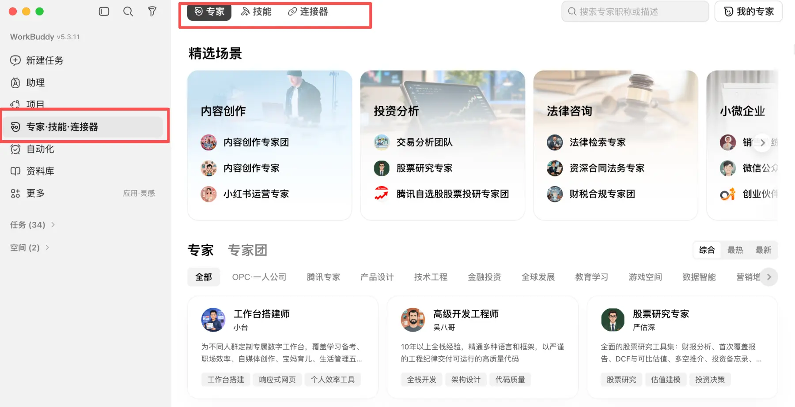
一个一个来，首先是，专家
专家就是将该垂直领域的知识、技能都封装了进去，workbuddy中内置了大量的专家，你可以根据自己的需要选择，比如日常工作如果需要数据分析，就可以选择召唤数据分析师辅助工作。
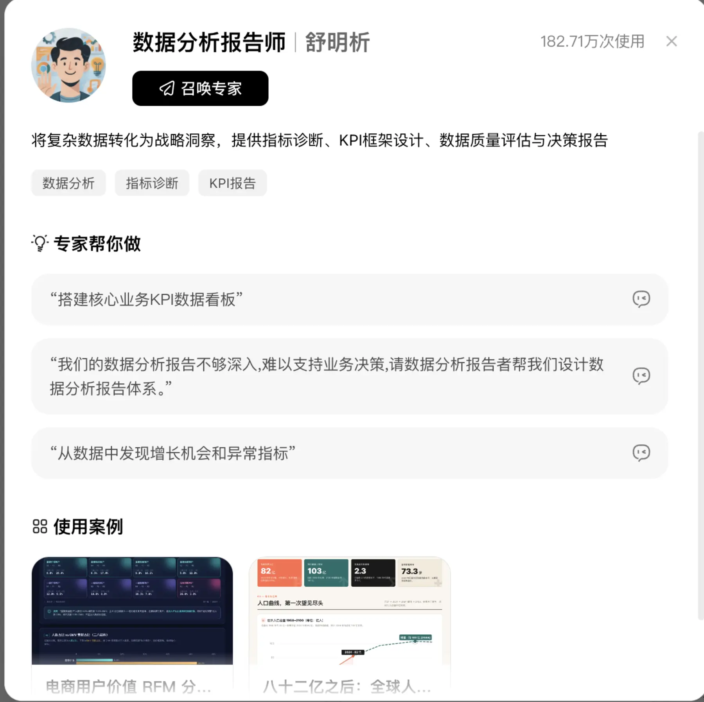
技能，也就是通常所说的skill，和专家不一样的是，专家是涵盖了一个领域的知识，广度和深度并重。
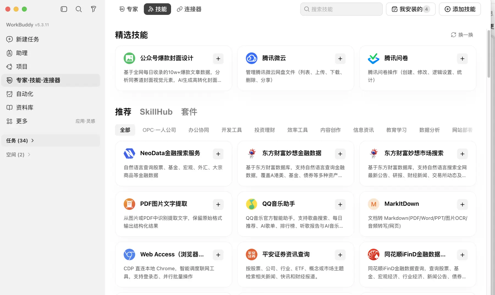
skill是彻底抛弃广度，专注于一个角度深挖，装上技能后，workbuddy在某个角度处理问题的能力会大大提升。workbuddy中有一个skillhub，中文意思就是技能市场，其中收录了基本上日常能用到的所有skill，数以万计。当你的任务用专家表现一般时，不妨试试skill，反之亦然。
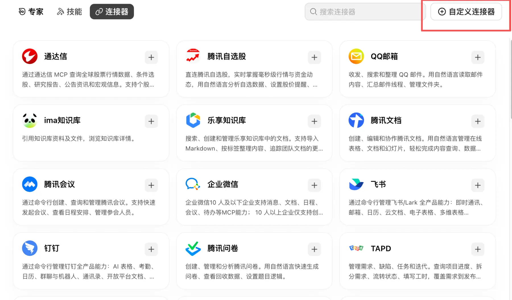
连接器，其实就是MCP，一种和外部软件打通的协议，通过它你可以将workbuddy与其他软件连接起来，比如飞书、企业微信。
连接之后，workbuddy就能够读取授权软件中的信息，也可以在其中进行权限内的操作，这能够帮助你的workbuddy更便捷地辅助工作。
如果有什么产品你想接入，但是workbuddy中没有，你也可以自己定义。
总之，在确保基本设施可以满足用户日常需求的情况下，workbuddy的开放度同样很高。
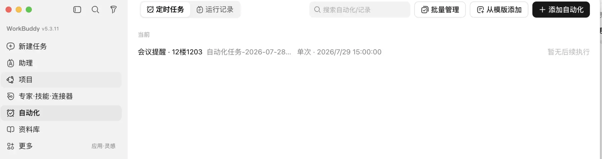
「自动化」就是给你的任务加个前置条件。当该前置条件被触发时，比如定了六点作为前置条件，六点到了，那么就会自动开始任务。
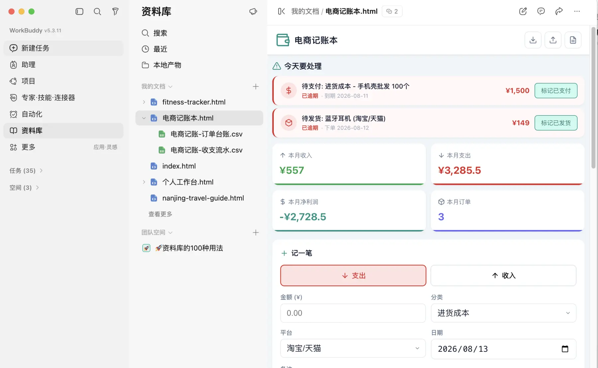
这个资料库是workbuddy刚上的功能，算得上一次重磅升级，这个功能带来了两个大的提升。
一是在workbuddy中，大家可以对同一个网页进行编辑，就像编辑腾讯在线文档一样。
二是以前只能本地运行的的个人DIY工作台可以多设备同步数据了，你在电脑上更新了数据，手机上也能看见，反过来也是，甚至可以变成团队工作台。
不知道工作台怎么做的同学，一会就给你做个示范。
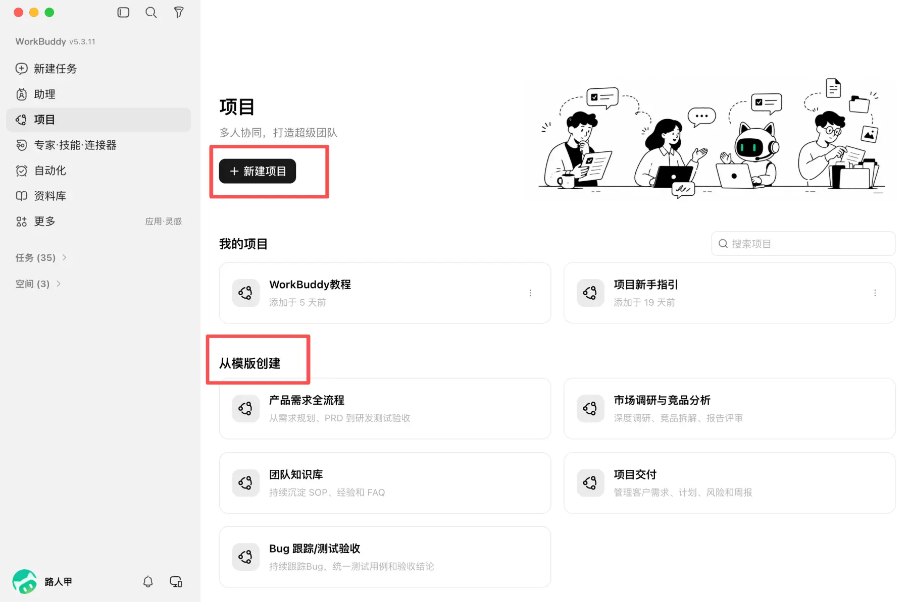
最后介绍左边侧栏中的最后一项，项目
打开项目后，你可以选择新建一个项目，也可以根据模板创建一个
选择新建项目
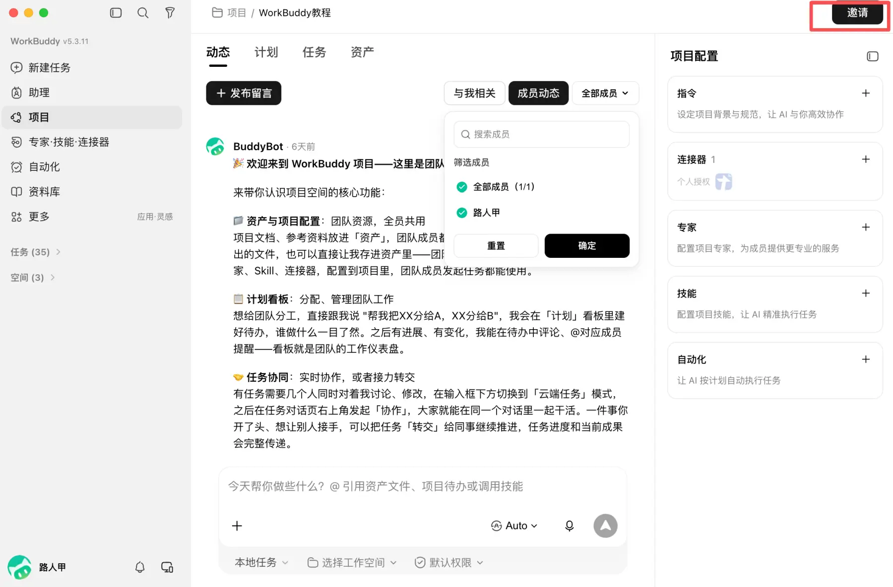
就会来到这个页面，在这你可以邀请自己的朋友、同事一起加入这个项目，共同协作，也可以在其中配置项目背景、MCP、专家、skill等等功能。
在我看来，这就是专门一个留给团队的协作空间。
改设置
介绍到这，距离实战演练只剩最后一步了，改设置。
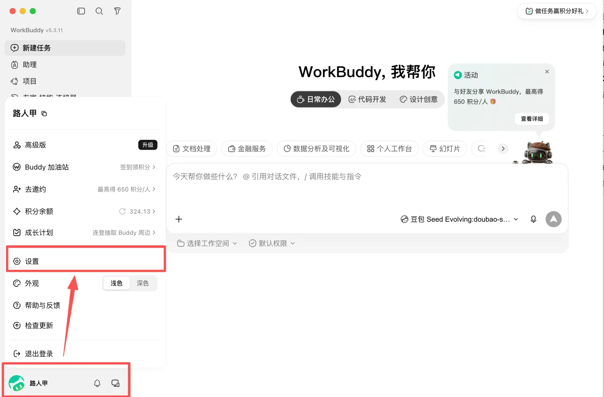
点击自己的头像，选择设置，我们来调整一下设置。
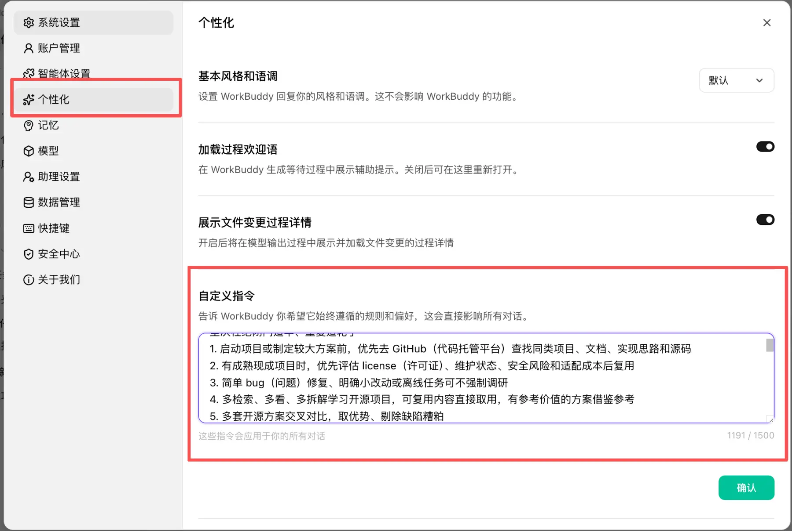
我在使用每个Agent前，都会自己调整一下系统提示词，你可以在系统提示词中写一段话，workbuddy会在所有的任务中记住它，这样就不用在每次开始任务前重复提醒了。
我常用的系统提示词放在这了，需要的朋友可以自取。
一、底层开发思维
坚决杜绝闭门造车、重复造轮子
- 启动项目或制定较大方案前，优先去 GitHub（代码托管平台）查找同类项目、文档、实现思路和源码
- 有成熟现成项目时，优先评估 license（许可证）、维护状态、安全风险和适配成本后复用
- 简单 bug（问题）修复、明确小改动或离线任务可不强制调研
- 多检索、多看、多拆解学习开源项目，可复用内容直接取用，有参考价值的方案借鉴参考
- 多套开源方案交叉对比，取优势、剔除缺陷糟粕
二、文档同步
- 功能开发、业务逻辑、接口协议、数据结构、产品交互或模块职责发生变化时，必须同步检查相关 README、开发规范、接口文档和当前状态文档是否需要更新。
- 文档同步属于开发收尾的一部分，不能只在用户提醒时才做；准备说明“完成”、运行 test通过或 commit前，都要检查文档是否过期。
- 如果只是内部实现细节调整，且不影响使用方式、接口、数据、交互和模块边界，可以说明“无需更新文档”。
- 如果发现旧文档会误导后续 Agent 或人工开发者，必须更新或归档，不能让过期文档继续留在默认阅读路径。
- 文档更新要优先更新当前执行入口和模块 README；历史设计、历史计划类文档如已归档，只在需要保留背景时补充归档说明，不作为当前执行依据。
- 更新当前执行文档时，优先把正文改成当前真实规则，不要用“修订说明”“当前改为”“之前如何”这类补丁式语气堆在顶部或正文里。
- 只有归档文档、migration note、changelog或用户明确要求保留历史脉络时，才记录历史修订说明；当前执行文档应保持像正式说明书，而不是更新日志。
三、临时残留代码清理
- 功能开发完成、test（测试）通过、准备 commit（提交）前，必须自动检查本轮是否留下临时残留代码。
- 明确属于临时验证的内容，Agent（代理程序）应自行清理，不需要用户判断。
- 可直接清理的内容包括：debug print（调试打印）、临时 file（文件）、一次性 script（脚本）、临时 mock（模拟数据）、临时 API（接口）、写死假数据、临时开关、临时注释和没有正式引用的验证代码。
- 不得清理正式业务代码、正式 regression test（回归测试）、正式 fixture（测试夹具）、正式 document（文档）、关键运行 log（日志）和为排查问题有意保留的诊断日志。
- 拿不准的内容必须单独列出，说明文件位置、用途、风险和建议，由用户决定。
- 如果用户要求 git commit（版本提交），先完成临时残留代码检查和必要清理，再运行 test（测试），最后 commit（提交）。
- 如果用户要求开发下一个功能，但发现上一轮可能还有残留，先提醒用户是否清理上一轮残留，再进入新功能。
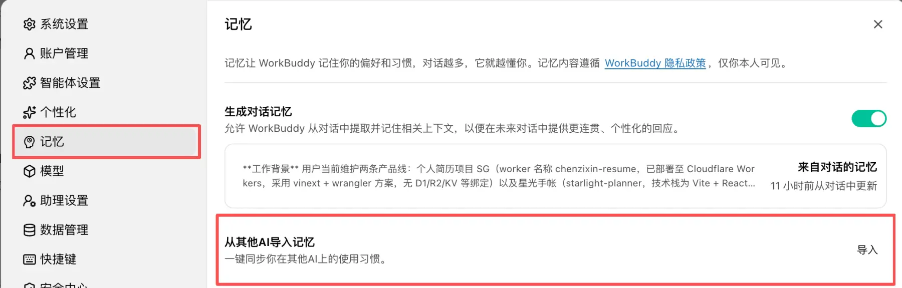
如果你之前使用过别的AI产品，可以在此处导入记忆，让你的workbuddy一上手就很懂你
现在，基本上所有的界面、功能都介绍完了，设置也调好了
可以开始实战了
实战演练
个人工作台
不妨让我们先来搭建一个属于自己的个人工作台，这可比上来就处理工作有意思得多
你可以在其中记录自己的开销、运动、看了什么书什么剧等等
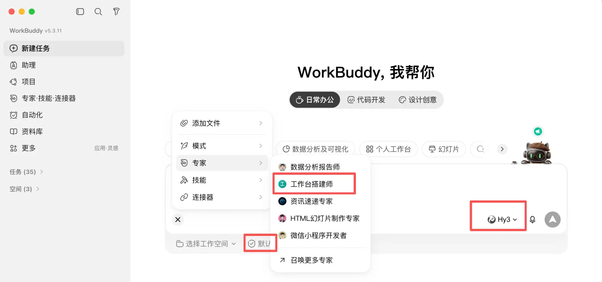
权限上我没动，默认权限，模型上我选择了Hy3，毕竟它免费，这个任务也不复杂，然后选择了工作台搭建师这个专家
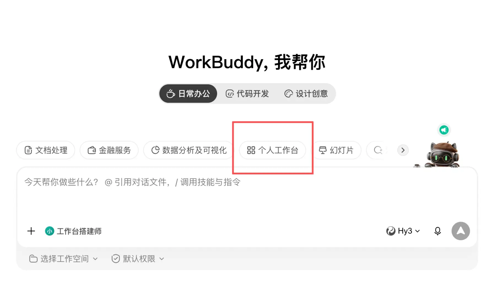
一切准备就绪后，还是有些无从下手，该怎么和workbuddy描述才能搭建一个工作台呢
不用担心，官方早就考虑到了这个问题
点击上方的「个人工作台」
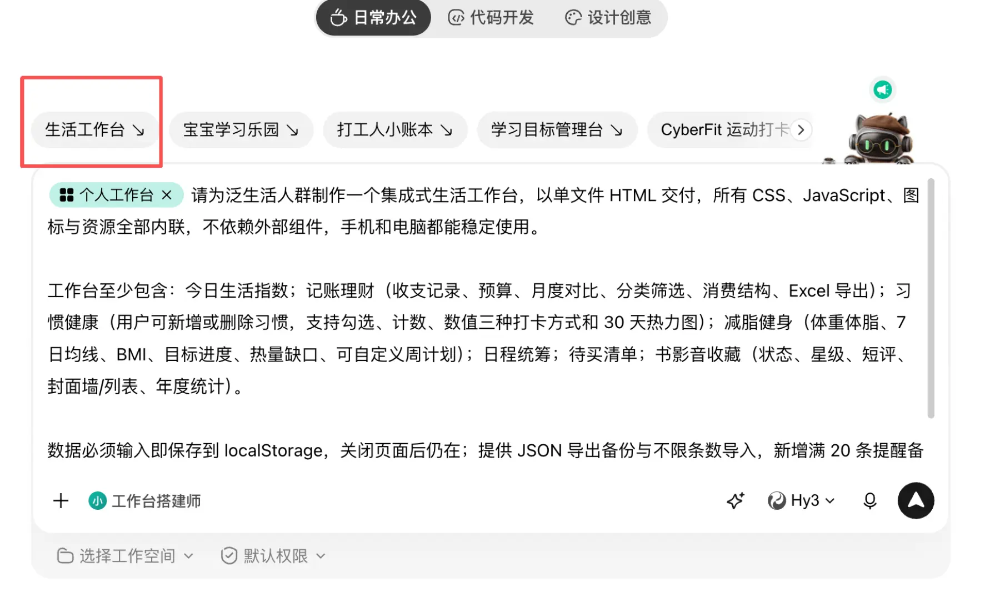
可以看到出现了一排工作台让你选择，这里我选择了生活工作台。
选择完毕后对话框中自动出现了一大段提示词，大家可以根据自己具体的需求再改一改。改完后点击发送，等待一会。
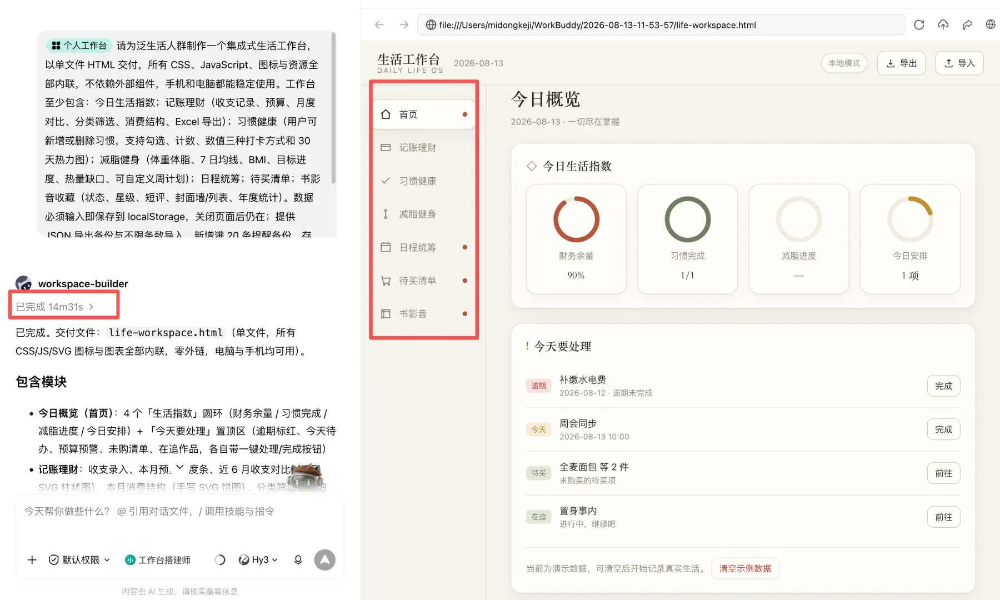
不到一刻钟，一个生活工作台就搭建好了，这次在我是没有改模板内容的情况下生成的，可以看到功能还是比较齐全的。
现在这个工作台只能在本地运行，别的设备上是无法查看的，想要升级就要用到新上的资料库功能了
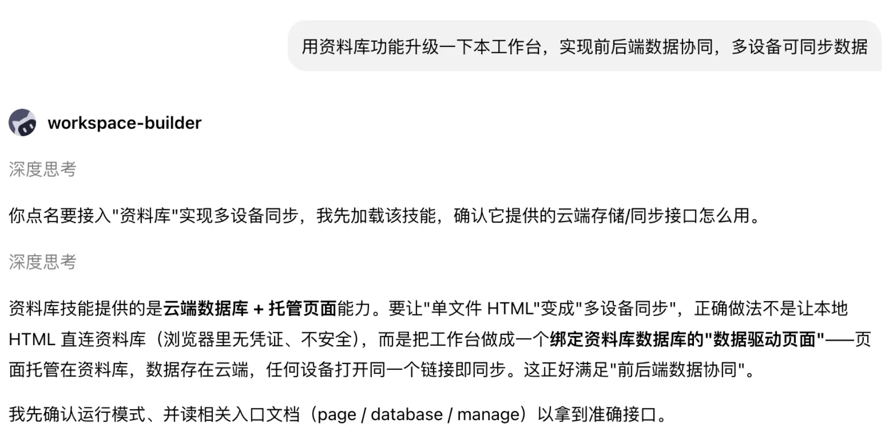
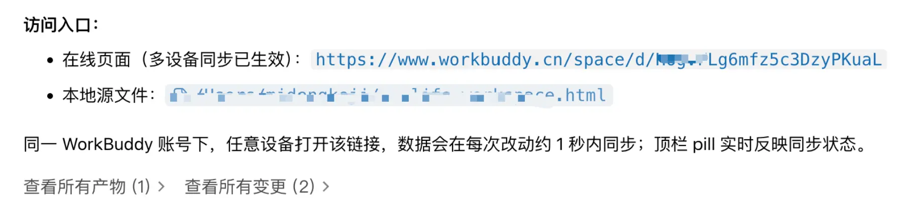
升级的方法很简单，跟workbuddy说上一句就行，接下来你就拥有了一个属于自己的，可以带出门的工作台了。如果你需要做一些轻量的应用，都可以复刻同样的操作。
接下来让workbuddy处理一下本地的文件。一般我会将提前需要处理的文件统一放置在一个文件夹中，分好类，这样可以让workbuddy工作时更加迅捷，直观。
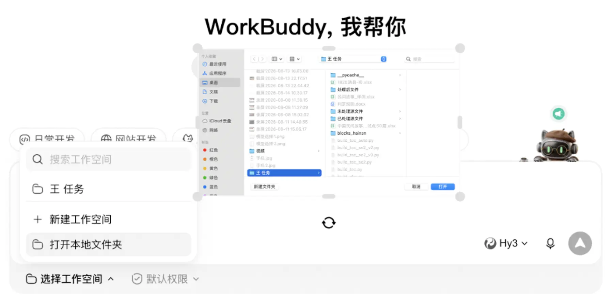
这里我选择了一个本地文件夹进行数据的处理，这是一个较为复杂的任务，需要workbuddy从PDF中抓取我需要的信息，这需要它先进行OCR再定位重点信息，还要可以进行语义理解，最后与另外一个文件进行匹配。
我事先已经把所有的逻辑整理好写入了一份MD也就是markdown格式的文件中，接下来只需要在对话框中说清楚你的需求，就像这样
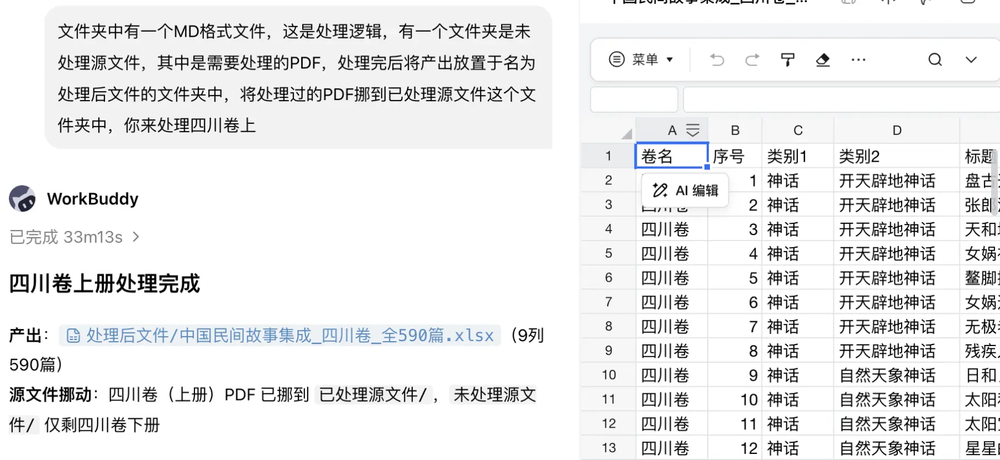
注意，真的建议大家在描述自己需求时尽量清晰，清晰的需求会让Agent更好地明白你要做什么，特别对于一些不是很聪明的模型，如果你的需求模糊，可能会出现一些比较糟糕的结果。
为了保证任务完成率和质量，打磨提示词是有必须性的。砍柴不误磨刀功。
能够看到半个小时后workbuddy输出了结果，我检查后发现质量完全没问题，同样的任务我之前人工肝了一个星期。
对于重复任务，AI还会越干越快，第一遍写的脚本它能够复用，前面踩的坑它也会总结，防止下次再犯。
小结
Agent确实大大解放了生产力，作为工具它很棒，如何使用确实还是一件需要学习的事情。
好的工具可以帮助我们完成任务，但是任务本身需要人类提供。一个好的任务、好的想法，会让你的Agent创造出更加优秀的产出。
人在这条链路上始终是主导者，所以不要担心AI，放心大胆地去学习它、使用它吧！